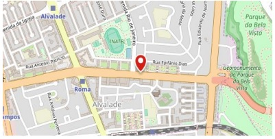

Bienvenidos a Delicias Gourmet
- Entradas
- Ensalada César
- Sopa de tomate
- Pan de ajo con queso
- Con queso Cheddar
- Con queso parmesano
- Platos principales
- Pasta al Pesto
- Pollo a la parrilla
- Filete de Res
- Postres
- Tiramisú
- Helado de vainilla
- Fruta fresca de temporada
Volver al inicio
Definiciones de platos
Pasta al Pesto
Plato de pasta italiana con una salsa a base de albahaca, ajo,
piñones y queso parmesano.
Tiramisú
Postre italiano hecho con capas de bizcocho empapado en café,
mascarpone y cacao en polvo.
Filete de res
Corte de carne de res, cocinado a la parrilla y servido con salsa
de la casa.
- Pasta al Pesto
- Plato de pasta italiana con una salsa a base de albahaca, ajo,
piñones y queso parmesano.
- Tiramisú
- Postre italiano hecho con capas de bizcocho empapado en café,
mascarpone y cacao en polvo.
- Filete de res
- Corte de carne de res, cocinado a la parrilla y servido con salsa
de la casa.
Volver al inicio
Ubicación del Restaurante
Nos encontramos en el centro de la ciudad:

Telefono
Llámanos al +34 555 123 456 para hacer una reserva o pedir información.
Email
Envíanos un correo a info@deliciasgourmet.com para cualquier consulta.
Horarios
Estamos abiertos de lunes a sábado, de 12:00 a 23:00.
Volver al inicio